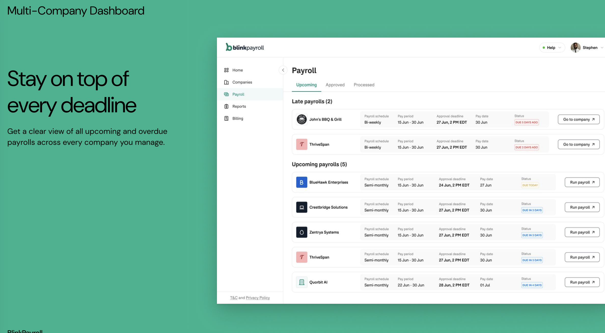
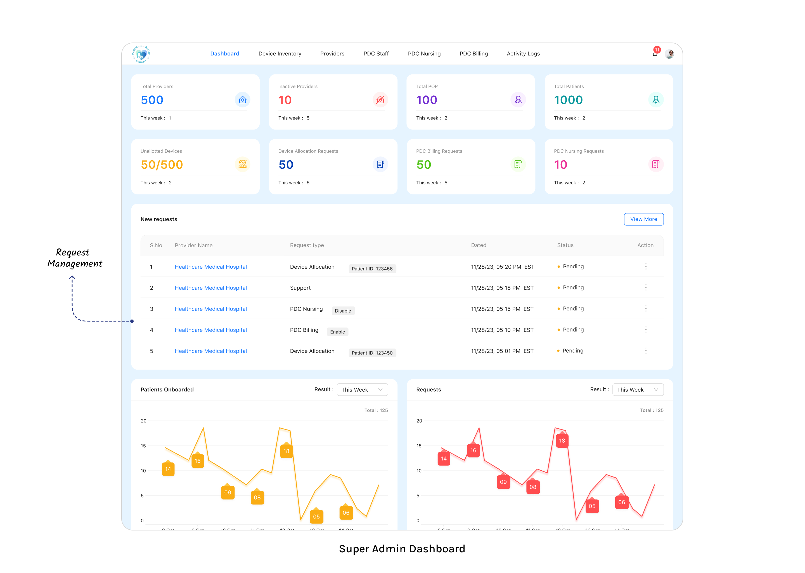
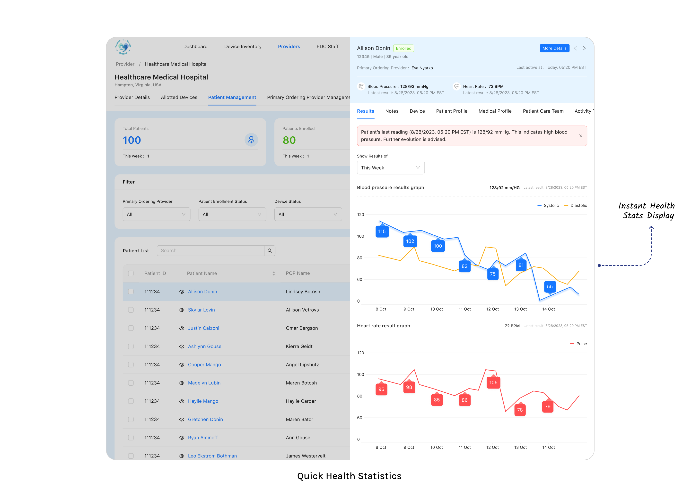
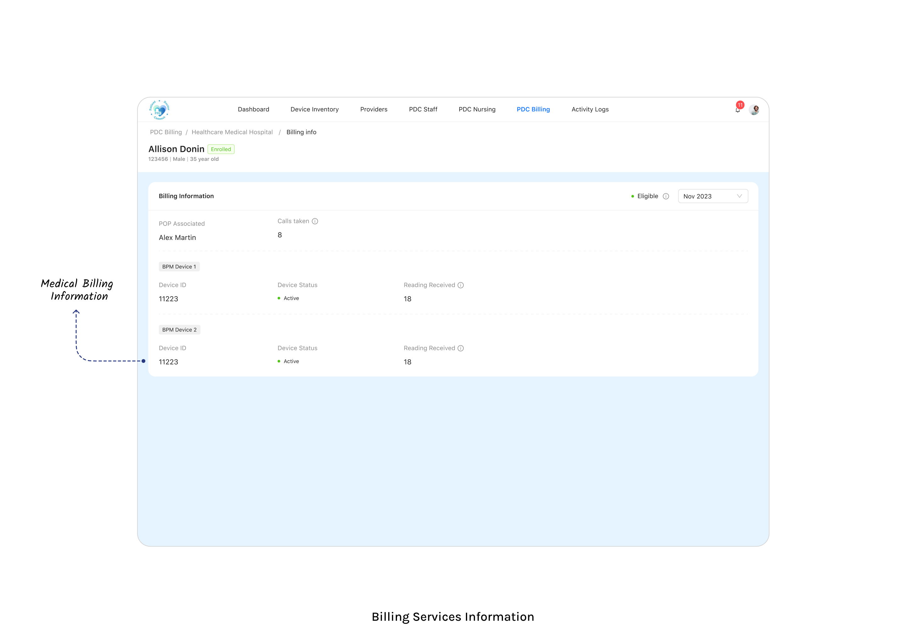
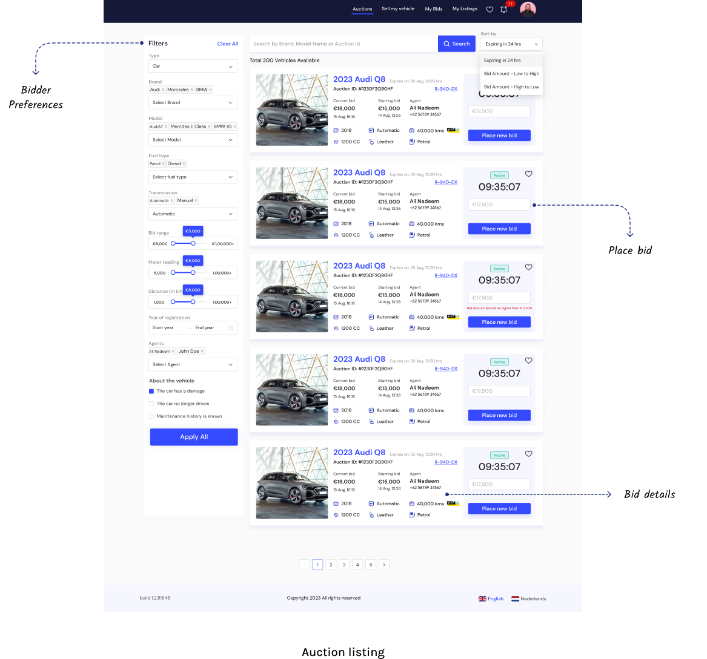
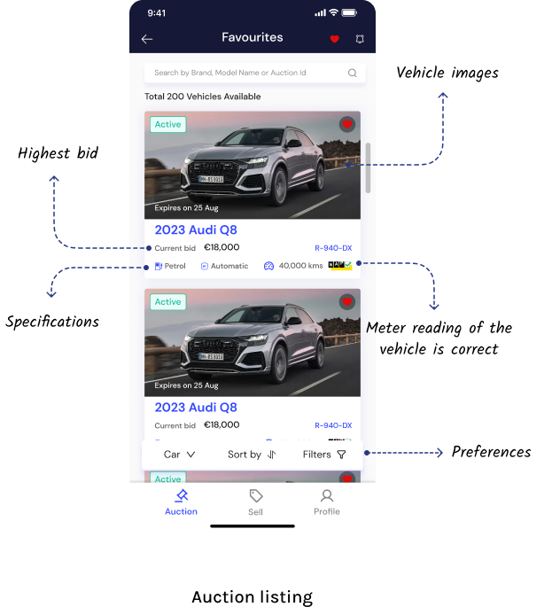
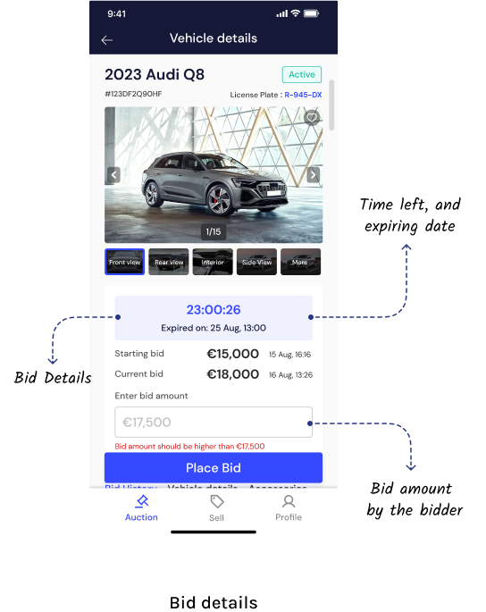

Selected Projects
Process modelling, operational analysis, and requirements documentation across domains
Research & Requirements Gathering
This example shows how I approach research and requirements for a new feature improvement within an existing live product — not initial product discovery.
Stakeholder discussions: Sat with the operations team to walk through the current payroll submission process end to end. Asked questions to understand what users were actually doing, not just what the process was supposed to be.
Assumptions verified: Listed key assumptions upfront — pay date rules, who initiates payroll, what "late" means in the system — and confirmed each one before writing requirements. This prevented scope from drifting during dev.
Data review: Pulled support ticket data and categorised by root cause. Found that 70-75% of late payroll tickets traced to one specific scenario — payroll started but not submitted before the pay date. Remaining cases were distinct problems requiring separate solutions.
Competitor analysis: Reviewed how similar payroll platforms handle late submission scenarios to understand what users expect as a standard experience.
Flow first: Created a high-level current state vs future state flow before writing any requirements. Shared with stakeholders for validation and revised based on feedback. Then moved to swimlane diagrams to map roles, handoffs, and edge cases clearly.
Documentation: Translated agreed flows into a BRD covering functional requirements, edge cases, and acceptance criteria. Ready for dev handoff — shipped in one sprint.
Problem & Business Context
Business Need: Companies relying on spreadsheet-based payroll processing faced manual tax calculation errors, compliance risks with federal and state filings, and no employee self-service capability. The existing process couldn't handle multiple pay types (regular, off-cycle, contractor, bonus) or multi-company setups reliably.
Solution: End-to-end payroll system (Blink) with automated gross-to-net calculations, CheckHQ API integration for tax computation and ACH/wire payments, and multi-company support — all with a 5-day approval-to-pay timeline.
Company: Financial Docs (Current) | Integration: CheckHQ API | Compliance: IRS, State Tax Agencies
User Roles & Key Workflows
User Roles:
- Admin — Company setup, system configuration, user management
- Payroll Manager — Run payroll, review/approve, initiate funding
- Employee — View paystubs, access tax documents (W-2, 1099), manage personal info
Key Workflows:
- Regular Payroll: Company setup → Employee onboard → Work schedule → Payroll draft → Gross-to-net calculation (base + overtime + bonuses − pre-tax deductions − taxes − post-tax) → Preview paystubs → Approval → Fund account (ACH/wire) → Direct deposit → Paystub generated
- Tax & Compliance: Federal income + State income + Social Security + Medicare calculated → Tax deposits filed → Quarterly reports (940, 941) → Year-end W-2/1099 generation
- Approval Timeline: Day -3 (Draft) → Day -2 (Review + Preview) → Day -1 (Approve) → Day 0 (Fund) → Day +1 (Pay Day)
- Pay Types: Regular payroll, Off-cycle payroll, Contractor payments, Bonus runs
UI Designs (3 screens)



Business Owner Journey
Research & Requirements Gathering
Stakeholder discussions: Held structured sessions with the US-based clinical and billing team. Walked through how devices were allocated, how usage days were tracked, and how claims were submitted — mapping the actual process, not the intended one.
Assumptions verified: Before the first requirements session, independently researched CMS billing rules for RPM CPT codes (99453, 99454, 99457, 99458) and HIPAA requirements. Brought these as assumptions into stakeholder discussions to confirm or correct — this saved significant back and forth later.
Competitor analysis: Reviewed existing RPM platforms to understand how device usage tracking and automated billing were handled as standard — used this as a baseline when discussing feature scope with the client.
Flow first: Created high-level clinical and billing workflow diagrams before writing any requirements. Shared with stakeholders to validate the process understanding. Revised and moved to detailed swimlane diagrams covering device lifecycle, clinical review workflow, and billing cycle — with all 8 user roles mapped across each flow.
Documentation: Translated agreed flows into a full BRD — user role matrix, functional requirements, billing logic specification, compliance annotations, and acceptance criteria. Served as the single reference for dev, QA, and client sign-off through MVP launch.
Problem & Business Context
Business Need: Healthcare providers (small to multispecialty clinics) needed to monitor patients remotely between visits using BLE-connected medical devices. The existing process involved manual tracking of device usage days and CPT billing codes — causing revenue leakage and compliance gaps.
Solution: Multi-tenant SaaS platform (PDC - Patient Doctor Connect) connecting clinics, providers, and patients. Devices managed centrally by PDC Admin, allocated to patients, with automated vitals capture triggering clinical workflows and monthly billing.
Client: Yeletech (USA) | Model: B2B SaaS | Compliance: HIPAA | Infra: AWS Cloud
User Roles & Key Workflows
8 User Roles:
- Super Admin (PDC) — Full platform access, device inventory, provider onboarding
- PDC Staff — Sub-admins, nurses, billers with assigned permissions
- Provider Admin — Head of clinic, manages doctors, nurses, patients
- Primary Ordering Provider (POP) — Doctor responsible for patient care decisions
- Provider's Nurse — Manages patients, adds notes, triages alerts
- Provider's Patient — View-only access to own health data
Key Workflows:
- Device Lifecycle: Inventory → Allocate to patient → Ship → Activate → Monitor readings → Deactivate/Return
- Clinical Review: Patient sends vitals → Alert triggered if out of range → Nurse triages → POP reviews → Notes documented
- Billing Cycle: Track monthly device usage days → Map to CPT codes (99453, 99454, 99457, 99458) → Generate billing claims → Submit
UI Designs (4 screens)




Research & Requirements Gathering
Stakeholder discussions: Held sessions with the Netherlands-based client to understand how dealers and buyers currently transacted — what the informal process looked like before the platform, and where the biggest pain points were for each party.
Assumptions verified: Went into the first session with a set of assumptions about how an auction workflow should operate — bidding rules, winner selection logic, payment timing, logistics handoff. Confirmed or corrected each one before designing the flow. This prevented rework after development had started.
Competitor analysis: Reviewed comparable B2B auction platforms to benchmark standard bidding mechanics, dealer onboarding flows, and dispute resolution processes. Used these as a reference when aligning the client on what was standard vs what needed custom design.
Flow first: Created a high-level flow first and shared it for client validation before going deeper into detail. Once the overall structure was agreed, moved to detailed swimlane diagrams covering dealer onboarding, vehicle listing, auction mechanics, bid management, winner selection, payment, and logistics handoff.
Documentation: Agreed flows translated into functional requirements covering all three portals — customer website, dealer dashboard, and super admin panel. The diagrams became the single reference for dev and QA work throughout the project.
Problem & Business Context
Business Need: Car dealers in the Netherlands relied on informal phone and email negotiations to buy and sell vehicles, lacking transparency in pricing, standardized inspection documentation, and a structured bidding process. The market needed a digital auction platform with dealer verification and transparent workflows.
Solution: B2B auction platform (Snelwegdeals) with three interconnected portals — a public-facing customer website, a dealer dashboard for listing and managing auctions, and a super admin panel for platform oversight, verification, and dispute resolution.
Market: Netherlands | Type: B2B Marketplace | Model: Auction-based
User Roles & Key Workflows
3 Portals:
- Customer Website — Browse available vehicles, view inspection reports, place bids, track auction status
- Dealer Dashboard — List vehicles with photos/inspection, create auctions, manage bids, handle winner communication
- Super Admin — Dealer verification/onboarding, platform moderation, dispute resolution, analytics
Key Workflows:
- Dealer Onboarding: Register → Submit verification documents → Admin reviews → Approved → Access dealer dashboard
- Listing Flow: Dealer lists vehicle → Uploads photos + inspection report → Sets starting price and auction duration → Vehicle goes live on customer website
- Bidding Flow: Customers browse listings → Place bids within auction window → Timed bidding period → Highest bid wins → Winner notified
- Post-Auction: Winner confirmed → Payment processed → Logistics coordinated → Vehicle transferred → Transaction closed
System Flowchart
High-level flow showing Customer Website, Super Admin, and Dealer Dashboard interactions
UI Designs (3 screens)


